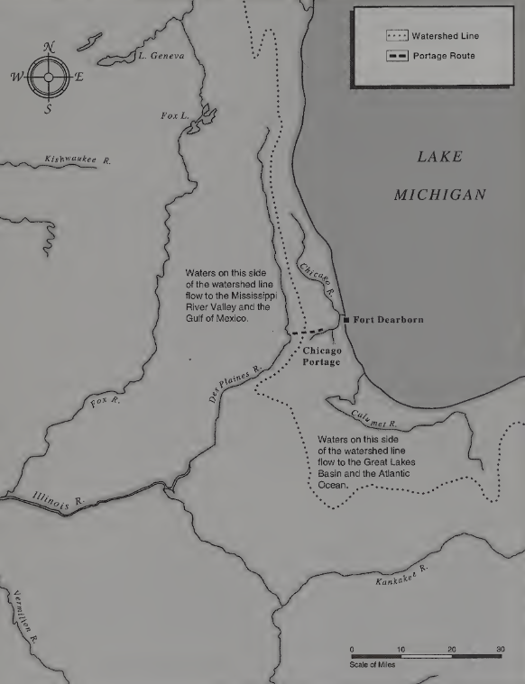
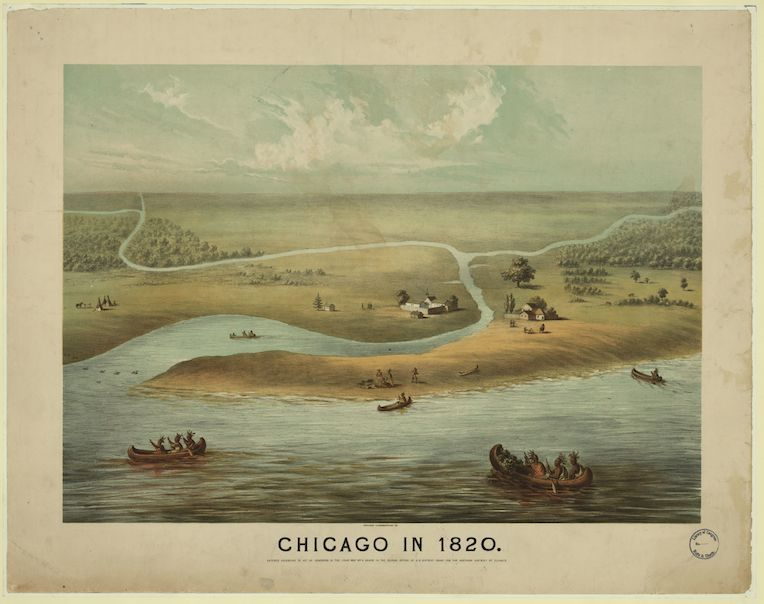
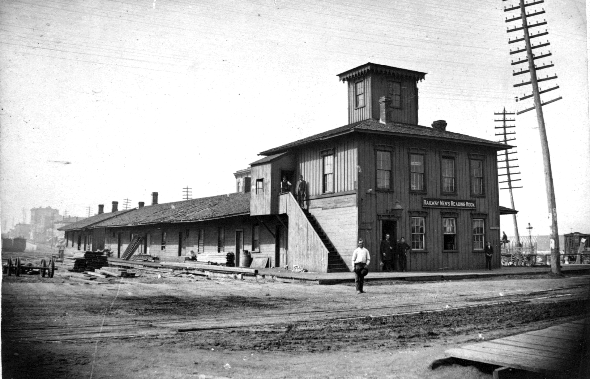
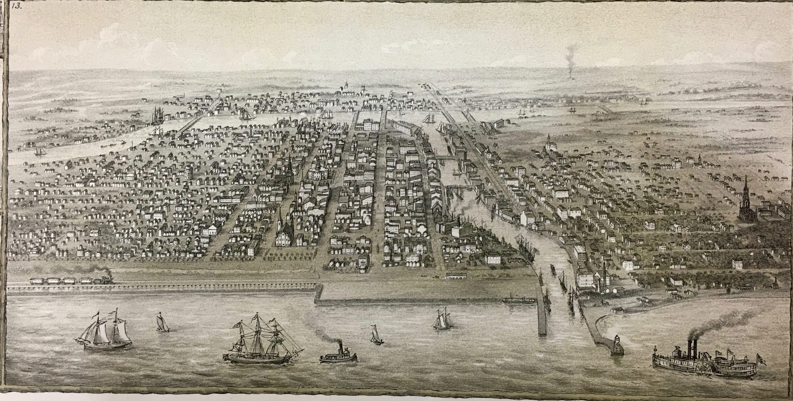
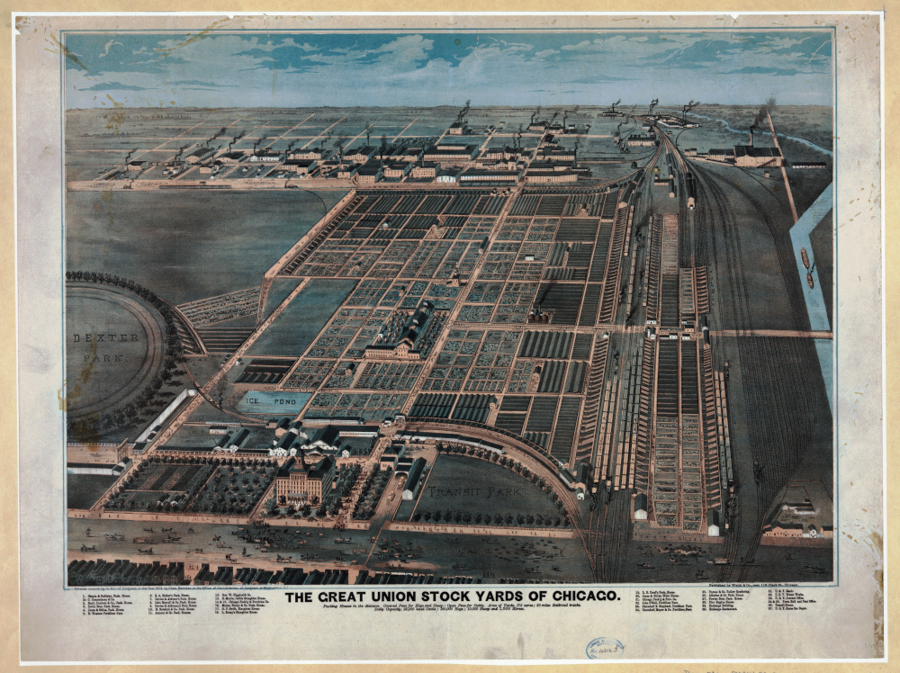

Prehistory

Ever since this continent’s first people crossed the Bering strait’s ice bridge 15,000 years ago, the area was valued for its transport links. The Chicago River passed a mere five miles from the Des Plaines river, which eventually led into the Mississippi, meaning a short hike was all that kept boats from connecting the Great Lakes to the Gulf of Mexico. However, the land was never home to a major settlement by the locals, due it the land’s poor drainage and temperamental weather.
When French missionaries and trappers “discovered” Chigagou (“wild garlic place”) in 1675, they too saw worth in its location and transit potential. It was an ideal mid-point between the French holdings in Canada and those in Louisiana, and the Mississippi river meant they could completely bypass the British colonies on the East Coast to connect the two. However, given that the French did not intend to establish settler colonies, Chigagou’s initial European population remained tiny, a frontier outpost surrounded by marsh.
Not much changed in the region beyond its passing to the British after the Seven Years’ War, and then the Americans’ after the Revolutionary War. While relations with the local Potawatomi population were initially friendly, the federal government’s hunger for territory would shatter this peace. 1795 saw the Battle of Fallen Timbers, the battle of Tippecanoe in 1811, and finally the Black Hawk war in 1833 saw ruinous defeats for the natives, compelling them to sign unequal treaties that deported them west of the Mississippi, “freeing” Chigagou (and Illinois as a whole) for rapid settlement.

When Illinois incorporated as a state in 1818, its population resided primarily in the south, where the land was far more favorable to farming. Chicago was still little more than a dozen sparse buildings surrounding Fort Dearborn, but change was on the wind. Swept up in the “canal fever” of the time, stemming from the East Coast, the Illinois Congress authorized the Illinois and Michigan canal to connect the Mississippi and Lake Michigan, which began construction in 1836. The work on the canal, as well as the Black Hawk War’s soldiers, and the recently finished harbor in Lake Michigan helped to swell Chicago’s population to 4,170 by the time it was incorporated in 1837.
Getting On Track

Unfortunately, the Illinois Canal was a disappointment, and while it did do good work, it was closed at the turn of the century. Its opening in 1848 also marked the beginning of the transportation that would render it obsolete. The Galena & Chicago Railroad had laid its first eight miles of track, to connect the namesake cities, and began shipping wheat to the city. Chicago’s position on Lake Michigan was already a critical link between East and West; raw materials were loaded onto ships and sent to the East Coast via the Erie Canal, and finished goods were unloaded and distributed to the west for sale. Railroads would increase the volume at which this exchange took place.
Several other entities sought to capitalize on this innovation, including the Illinois State Legislature. They passed a bill that same year to build 1,300 miles of state-owned railroads, including the Illinois Central Railroad, but the project was abandoned before a single mile of track was constructed. Private enterprise had all but given up, and rail transport in Illinois may have become a footnote if not for the efforts of Senator Stephen A. Douglas, using his political weight to get things back on track by 1850.

By 1850, Chicago’s population reached thirty thousand, and the state’s railroad mileage had jumped to 110 by that same year. A further construction boom saw a staggering increase to 2,800 miles in Illinois, second only to Ohio. With this extensive mileage, and access to the Atlantic via the Erie Canal, Chicago served as a key destination for bulk goods to be sent back east: grain, lumber, and meat.
Meat would soon become the dominant force among these three, and saw many important firsts during this time. It was desirable as a commodity because it allowed farmers to concentrate the value of bulk crops like corn into a form much easier to transport. 1844 saw the first international sale of meat, and the first livestock market opened four years later. The marriage of meat and train was not far behind; Sherman’s market became the first in the nation to transport stock by train to Chicago in 1852.

As the Civil War was winding down, the meat industry in Chicago was only heating up. Throughout the 1850s, new markets and slaughterhouses popped up all over the city to service the ever-increasing flow of livestock to the city. The end of the war increased the flow of animals to a torrent, as Chicago became the port of call for ranchers in former Confederate states who could now sell their animals to the North. On Christmas Day, 1865, the most (in)famous livestock plant in Chicago would open, defining the industry and altering the city’s future for decades to come: The Union Stock Yard. Founded by Chicago’s nine largest railroads, it boasted fifteen miles of rail on nine tracks, a hotel, a bank, all on 560 acres square in the middle of the city.
This is where we will end for this installment; look for part two next week, where we will cover up until the end of World War II, and watch as Chicago becomes the most significant city in the nation, second only to New York.